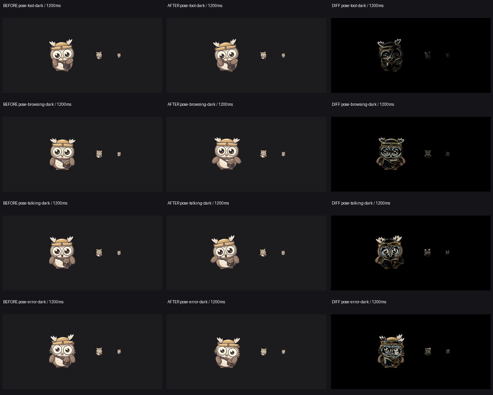
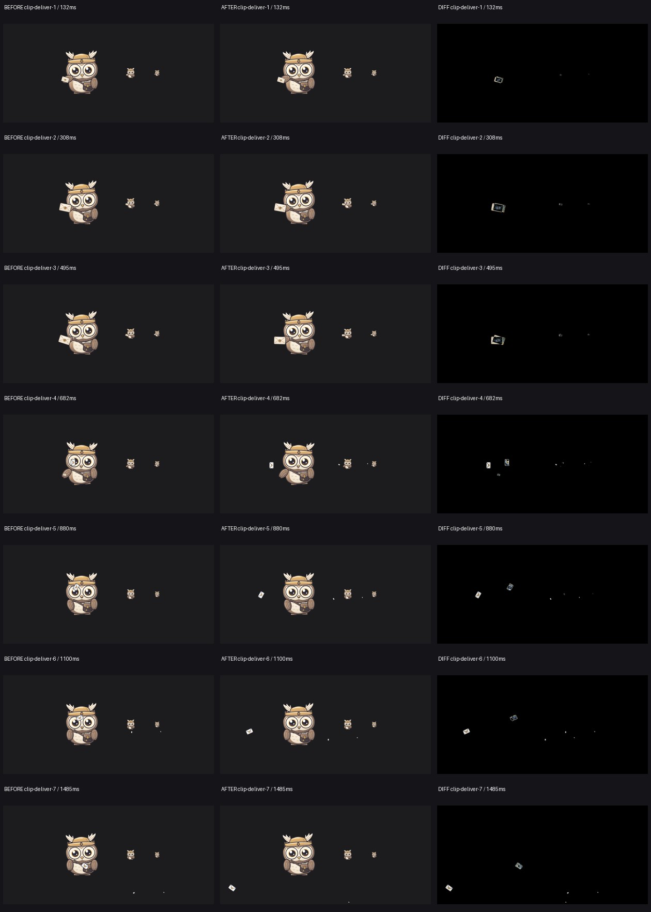
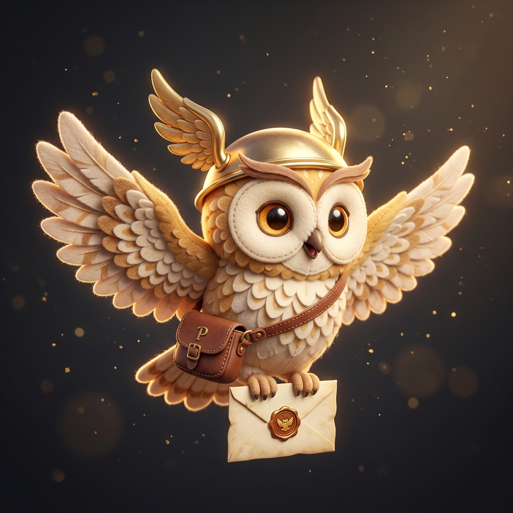
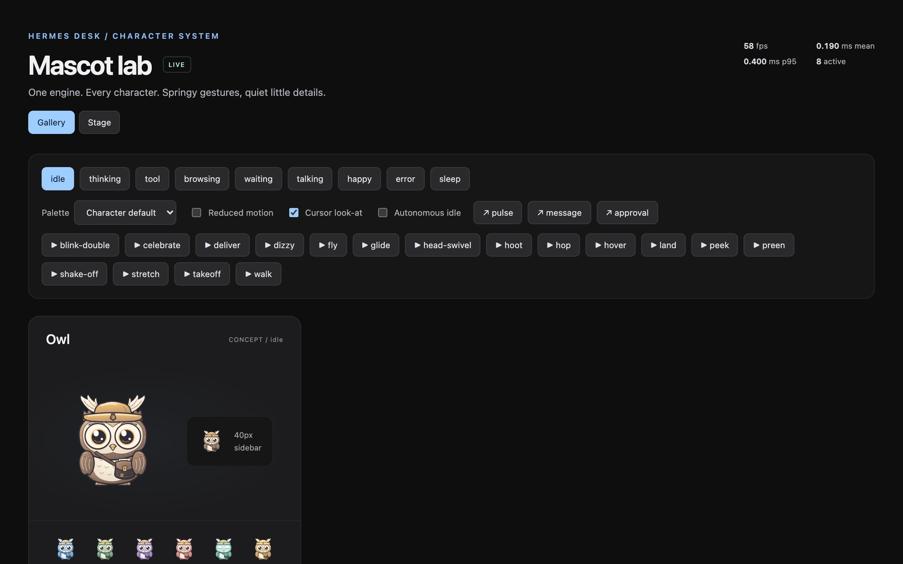
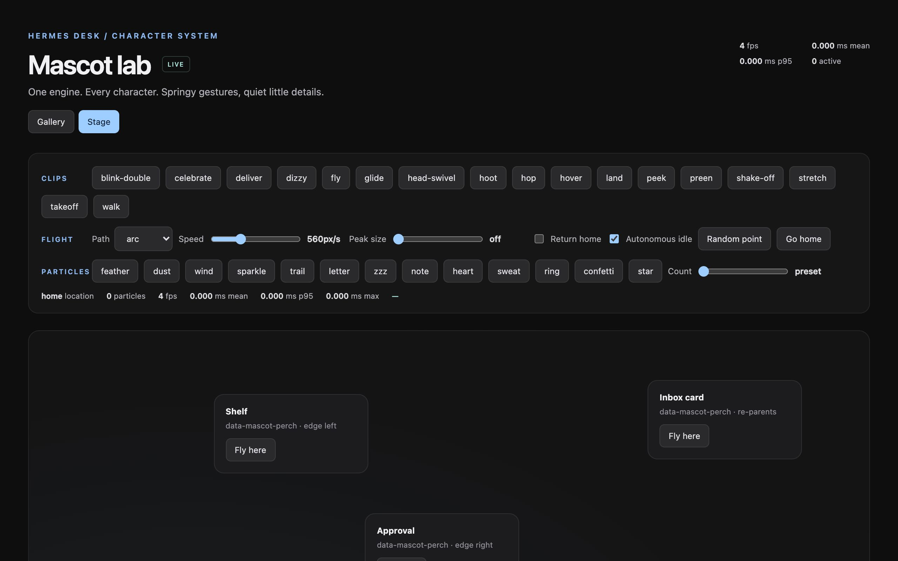

Verified refresh · 2026-10-08 · Blueprint v1.3
Clearer Pip, stronger evidence, preserved capabilities
Delivery letters now leave the held-letter anchor toward clear space instead of crossing the eyes. Browsing, tool use, talking, and error have stronger coarse poses; talking retains its animated beak. No artwork, palette, state, clip, reaction, or autonomous behavior was removed.


What was verified
- All nine states, seventeen clips, three reactions, nine palettes, and behavior weights remain available. The rig SVG, palette JSON, and sixteen other clip files retain their original hashes.
- All four production flight paths exercise takeoff, cruise, landing, perching, and home return, with both normal and reduced motion. Landing checks remain within two CSS pixels.
- The isolated Electron test verifies sidebar animation, reply delivery, background-agent delivery, approval perching, return-home, cadence, and no renderer errors.
- Both TypeScript checks and Python/Node syntax checks pass. The capture suite reports no native-size pose clipping cues in its flat-background fixtures.
Blueprint improvements
One command captures, validates, compares, reviews, and tracks findings. Model review is explicit opt-in, runs bounded sequential batches, saves every raw response, and can resume without replacing images. Empty/truncated output and incomplete sheet coverage stay blocked. Missing findings stay unverified; conflicting assessments do not become optimistic resolutions.
Open all capture and comparison sheets · Image-bound review and finding history · Measured results and preservation audit · Final 130-test validation · Native integration results
Reproduce the current pass
python3 /Users/devgwardo/.agents/skills/blueprint/scripts/visual_blueprint.py \ --repo /Users/devgwardo/hermes-desk --label baseline --reviewer agy # After an authorized change, use the exact printed before-report/review paths: python3 /Users/devgwardo/.agents/skills/blueprint/scripts/visual_blueprint.py \ --repo /Users/devgwardo/hermes-desk --label after --reviewer agy \ --baseline /absolute/before-report.json \ --previous-review /absolute/before-review/visual-review.json # No provider review: omit --reviewer agy; exit 2 means review pending. cd /Users/devgwardo/hermes-desk npm run test:unit -- src/lib/mascot src/components/__tests__/agent-mascot-flight-lifetime.test.tsx npm run typecheck node tests/e2e/mascot-stage.mjs
Hermes Desk · Mascot Blueprint · 2026-10-07 · f78711a
Pip, the courier owl — animation system audit
Pip is the mascot that lives in the sidebar and flies to deliver replies, approvals, and reactions. This blueprint inventories every animation the system can produce — 9 states, 17 clips, 3 reactions, 4 flight paths, 14 particle types, 9 palettes, across 3 characters — and lays out the harness to capture and verify each one.
The harness lives in tools/blueprint/, raw evidence in blueprint-out/, and curated media in docs/blueprint/media/. Every number on this page comes from a harness run against the real mascot engine in headless Chrome.

Animation inventory
Every animatable surface in the mascot system, with file locations and counts.
| Category | Source | Items | Count |
|---|---|---|---|
| Characters | src/lib/mascot/characters/{owl,fox,sprite}/ | owl, fox, sprite | 3 |
| States | motion.json → states | idle, thinking, tool, browsing, waiting, talking, happy, error, sleep | 9 |
| Reactions | motion.json → reactions | pulse, message, approval | 3 |
| Behaviors | motion.json → behaviors | head-swivel, preen, stretch, shake-off, hop, walk, peek, blink-double, hoot, look | 10 |
| Clips (owl) | characters/owl/clips/*.json | fly, glide, takeoff, land, hover, deliver, celebrate, dizzy, hop, peek, preen, shake-off, stretch, walk, head-swivel, hoot, blink-double | 17 |
| Flight paths | flight.ts → pathOffsets | arc, swoop, direct, loop | 4 |
| Particle types | types.ts → PARTICLE_TYPES | feather, dust, wind, sparkle, trail, letter, zzz, note, heart, sweat, ring, confetti, star | 14 |
| Palettes (owl) | palette.json → agents | default + maia, sage, iris, coral, mint, honey, rose, slate | 9 |
| Total assets | 69 |
Architecture
The mascot engine is data-driven: SVG rigs + JSON motion specs + a spring/oscillator runtime. The engine is correct; the data drives every animation.
flowchart LR R["rig.svg
SVG parts + pivots"] --> E["engine.ts
spring + oscillator runtime"] M["motion.json
states + reactions + behaviors"] --> E C["clips/*.json
keyframed choreography"] --> E P["palette.json
CSS variables per agent"] --> E E --> S["stage.ts
full-window overlay"] E --> H["cues.ts
app event → flight/reaction"] F["flight.ts
bezier paths + hermite"] --> S S --> O["mascot-lab.html
test page"] H --> A["App.tsx
sidebar → reply delivery"]
Engine
src/lib/mascot/engine.tsSpring physics, oscillators, clip player, state machine. Renders SVG parts with transforms from motion data.
Flight system
src/lib/mascot/flight.tsBezier arc paths, arc-length parameterization for constant velocity, hermite progress for re-targeting. 4 path styles.
Stage overlay
src/lib/mascot/fx/stage.tsOne full-window, pointer-transparent overlay. Z-index 45 (above app, below modals). Particle cap: 200.
Cue system
src/lib/mascot/cues.tsApp events → Pip choreography. deliver = fly to reply, toss letter, fly home. await-approval = perch on approval card. react = pulse in place.
Cue trigger
src/App.tsxOn turn end with happy presence: cueMascot(id, {type:'deliver', key:turn.id}) after 260ms. On waiting state: await-approval. On resolved: home.
Mascot lab
mascot-lab.html?mode=stageInteractive test page. Exposes window.mascotStage API: play, flyTo, flyToPoint, goHome, emit, location, particles.
States
Nine states per character, each with a pose (part transforms), oscillators (continuous motion), eyes (look direction, blink), and optional FX. The harness captures 150 frames (5s @ 30fps) per state and checks oscillator smoothness, spring settle, eye direction, and art clipping.

State checks
| State | Check | How measured | Result |
|---|---|---|---|
| idle | Oscillator runs (breathing visible) | Pixel delta between frames 0 and 30 | pending |
| thinking | Head tilted, wing on chin | Part transform: head rotate > 0, wing-l tx > 0 | pending |
| tool | Satchel flap open | Part transform: flap sy < 0 | pending |
| browsing | Pupils oscillate horizontally | Pupil x position delta over 1s | pending |
| waiting | Letter visible (scale > 0) | Letter part sx, sy > 0 | pending |
| talking | Beak cycles in height | Beak part sy varies over time | pending |
| happy | Hop visible (body ty changes) | Root ty delta over clip duration | pending |
| error | Ears flare, helmet slips | Ear-tuft + helmet part transforms | pending |
| sleep | Eyes fully shut (lid = 1) | Lid part sy = 1 for full duration | pending |
Clips
Seventeen keyframed choreographies. Each clip has a duration, blend in/out, spring scale, and keyframed part/eye/mouth/fx tracks. Clips can be override mode (replace state pose) or additive (layer on top).
| Clip | File | Duration | Mode | What it does |
|---|---|---|---|---|
| takeoff | clips/takeoff.json | — | — | Wing flap + body lift |
| land | clips/land.json | — | — | Body settle + wing fold |
| fly | clips/fly.json | — | — | Stable flight pose + wing oscillation |
| glide | clips/glide.json | — | — | Flat glide, minimal wing motion |
| hover | clips/hover.json | — | — | Hovering bob + wing flutter |
| deliver | clips/deliver.json | — | — | Letter toss from wing |
| celebrate | clips/celebrate.json | — | — | Hop + sparkle emission |
| dizzy | clips/dizzy.json | — | — | Spiral eye/ear effect |
| hop | clips/hop.json | — | — | Squash-and-stretch: anticipation → launch → land |
| peek | clips/peek.json | — | — | Frame clip: peeks up from below |
| preen | clips/preen.json | — | — | Feather preening idle act |
| shake-off | clips/shake-off.json | — | — | Full-body shake |
| stretch | clips/stretch.json | — | — | Wing stretch |
| walk | clips/walk.json | — | — | Waddle walk |
| head-swivel | clips/head-swivel.json | — | — | Head turn idle act |
| hoot | clips/hoot.json | — | — | Beak open + body puff |
| blink-double | clips/blink-double.json | — | — | Double blink |
Durations and modes will be filled from the clip JSON files on the first harness run.
Flights
Pip flies from the sidebar home slot to a target (reply bubble, approval card, arbitrary point) via a bezier path, plays the takeoff clip at launch and the land clip on arrival, then returns home. Four path styles with arc-length parameterization for constant velocity.

| Path | Control points | Shape | Check | Result |
|---|---|---|---|---|
| arc | v(dx*0.12, -h), v(-dx*0.12, -h*0.75) | Classic up-and-over arc, h = clamp(dist*0.45, 60, 320) | Path peaks above start/end midpoint | pending |
| swoop | v(dx*0.45, h*0.55), v(-dx*0.2, -h*0.85) | Dives down then up — a sweeping swoop | Path dips below start before rising | pending |
| direct | v(dx/3, dy/3-18), v(-dx/3, -dy/3-18) | Near-linear with a slight upward bow | Path is approximately linear | pending |
| loop | v(dx+sign*h*0.9, -h*1.1), v(-(dx+sign*h*0.9), -h*1.1) | Loops up and around — the show-off path | Path crosses over itself | pending |
Flight checks
| Check | How measured | Result |
|---|---|---|
| Takeoff clip plays at flight start | Check api.location() transitions to 'flying' + clip name in play history | pending |
| Land clip plays on arrival | Check clip play history at arrival timestamp | pending |
| Velocity is constant (arc-length) | Sample position at t=0.25, 0.5, 0.75; compare deltas | pending |
| Return home flies back (no teleport) | Track position over return frames; no discontinuity > 50px | pending |
| Re-target mid-flight smoothly redirects | Call flyTo mid-flight; check no position jump > 50px | pending |
| Edge perching positions correctly | Check perch element bounds vs mascot bounds on arrival | pending |
Particles
Fourteen particle types spawn from anchor points on the rig. The stage caps at 200 live particles. Each type has its own trajectory, lifetime, and fade. The harness emits 20 particles and tracks spawn position, trajectory shape, despawn, and count cap.
| Type | Typical use | Check | Result |
|---|---|---|---|
| sparkle | celebrate, happy | Spawns at head, floats up, fades | pending |
| feather | shake-off, ruffle | Spawns at body, falls with drift | pending |
| dust | landing, rummaging | Spawns at feet, puffs outward | pending |
| wind | flight trail | Trails behind flight path | pending |
| trail | flight motion line | Follows mascot position | pending |
| letter | deliver clip | Tossed from wing, arcs to target | pending |
| zzz | sleep state | Floats up from head, fades | pending |
| note | talking, hoot | Floats up from beak | pending |
| heart | happy reaction | Floats up, pulses | pending |
| sweat | error, stress | Drips from head | pending |
| ring | pulse reaction | Expands outward, fades | pending |
| confetti | celebrate | Bursts outward, falls | pending |
| star | happy, celebrate | Twinkle at anchor, fades | pending |
Particle checks
| Check | How measured | Result |
|---|---|---|
| Particles spawn at correct anchor | Compare spawn position to rig part bounds | pending |
| Particles despawn within 4s | Track particle count over time; must reach 0 | pending |
| Cap holds at 200 | Emit 300; count never exceeds 200 | pending |
| No particle leak after idle | Check count 2s after emit; must be 0 | pending |
| No frame drops during emission | FPS during 20-particle emit stays > 55 | pending |
Palettes
Nine palettes (default + 8 agent variants) recolor the owl via CSS variables. Pale eye discs and dark ink must preserve expression contrast in every palette — the harness checks WCAG contrast between eye-disc and ink colors.
Palette checks
| Palette | Eye-disc vs ink contrast | WCAG | Result |
|---|---|---|---|
| default | — | — | pending |
| maia | — | — | pending |
| sage | — | — | pending |
| iris | — | — | pending |
| coral | — | — | pending |
| mint | — | — | pending |
| honey | — | — | pending |
| rose | — | — | pending |
| slate (dark) | — | — | pending |
Test results
The harness drives the real mascot engine in headless Chrome via the mascot-lab stage page. Each check is a promise the animation makes, measured geometrically where possible.
| Area | Check | Measured | Result |
|---|---|---|---|
| states | Every state shows motion (not frozen) | — | pending |
| states | No state clips outside the viewport | — | pending |
| clips | Every clip plays to completion | — | pending |
| clips | Clips blend back to state pose cleanly | — | pending |
| flights | Flight velocity is constant (arc-length) | — | pending |
| flights | No position discontinuity > 50px | — | pending |
| particles | No particle leak after idle | — | pending |
| perf | 13 mascots: FPS stays above 55 | — | pending |
| perf | p95 frame time under 3ms | — | pending |
| console | No console errors across every run | — | pending |
Performance
| Measure | Value | How it was measured |
|---|---|---|
| FPS (1 hero mascot, idle) | — | mascotFrameClock.stats().fps over 5s |
| FPS (13 mascots, autonomous idle) | — | Same, stage mode with 12 small + 1 hero |
| p95 frame time | — | stats.p95Ms over 10s flock stress test |
| Max frame time | — | stats.maxMs over 10s flock stress test |
| JS heap | — | performance.memory.usedJSHeapSize |
| Particle cap | 200 | STAGE_PARTICLE_CAP in fx/stage.ts |
Roadmap
Ranked by impact on animation quality. Size: S under half a day, M 1–2 days, L most of a week.
P1 · Build the harness do next
P1-1 · Patch stage.tsx to expose full API
- Evidence
- Stage mode only exposes play/flyTo/emit — no setState/react/setPalette
- Approach
- Add
setState,react,setPalettetowindow.mascotStagein stage.tsx (~10 lines) - Size
- S
P1-2 · Write mascot sweep script
- Evidence
- No harness exists — every check is pending
- Approach
- Write
tools/blueprint/mascot-sweep.mjsfrom the sweep template: states, clips, flights, particles, palettes, perf - Size
- L
P1-3 · Run sweep and fill results
- Evidence
- All 40+ checks show pending
- Approach
- Run the sweep, capture contact sheets, fill every table on this page with real numbers
- Size
- M
P2 · Fix what the harness finds after sweep
P2-1 · Fix clip blend hard cuts
- Evidence
- Known risk: clips may hard-cut back to state pose instead of easing
- Approach
- Adjust
blendIn/blendOutin clip JSON files - Size
- M
P2-2 · Verify flight path shapes
- Evidence
- Bezier control points are computed but paths haven't been visually verified
- Approach
- Capture all 4 paths, overlay traced trajectory, fix
pathOffsetsif shapes are wrong - Size
- S
P2-3 · Particle leak audit
- Evidence
- No verification that particles despawn cleanly
- Approach
- Run particle pass, check count returns to 0, fix lifetime/spawn logic if leaking
- Size
- S
P3 · Polish when stable
P3-1 · Palette contrast verification
- Evidence
- 9 palettes, none verified for WCAG eye-disc/ink contrast
- Approach
- Compute contrast ratio for each palette, fix
palette.jsonif any fail AA - Size
- S
P3-2 · Fox and sprite clip coverage
- Evidence
- Only owl has a
clips/directory - Approach
- Port owl clips to fox and sprite, or document them as clip-less
- Size
- L
P3-3 · Sidebar integration test
- Evidence
- Lab tests the engine in isolation, not the real app's sidebar→reply flight
- Approach
- Drive the full hermes-desk app, send a message, verify Pip flies from sidebar to reply
- Size
- M
Run & reproduce
The harness is not yet built. When it is, the commands will be:
# Start the dev server npm run dev # Run the mascot sweep (all passes) node tools/blueprint/mascot-sweep.mjs # Or run a single pass node tools/blueprint/mascot-sweep.mjs --pass states node tools/blueprint/mascot-sweep.mjs --pass clips node tools/blueprint/mascot-sweep.mjs --pass flights node tools/blueprint/mascot-sweep.mjs --pass particles node tools/blueprint/mascot-sweep.mjs --pass palettes node tools/blueprint/mascot-sweep.mjs --pass flock # Build contact sheets from raw captures python3 ~/.agents/skills/blueprint/scripts/media.py sheet \ docs/blueprint/media/states-contact.jpg \ blueprint-out/states/owl/idle/f_0000.png \ blueprint-out/states/owl/thinking/f_0030.png \ blueprint-out/states/owl/happy/f_0075.png \ --cols 3 --h 400 --labels "idle|thinking|happy" # View the mascot lab interactively open http://localhost:5173/mascot-lab.html?mode=stage